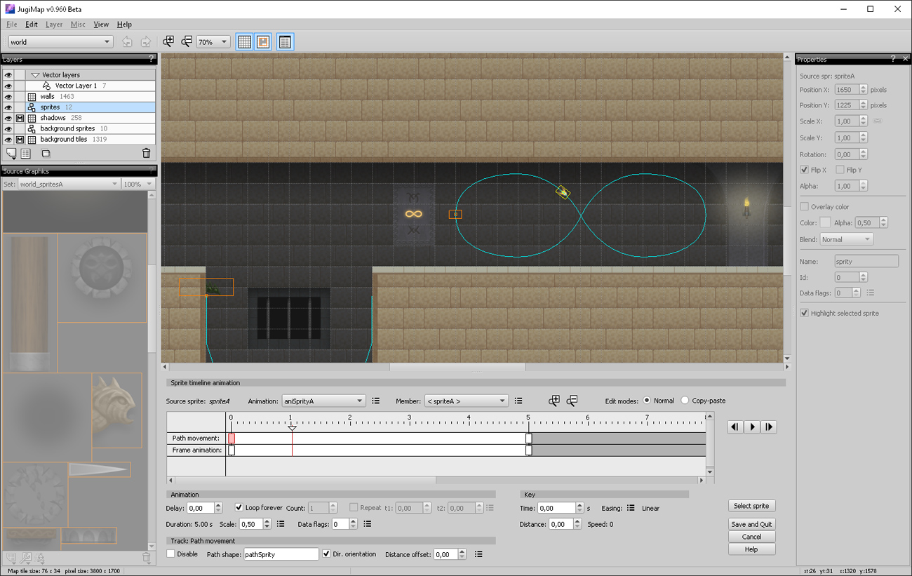

Sprite Timeline Animation is an application which displays various animated sprites using timeline animations in JugiMap API. All animations have been designed in JugiMap Editor.
The application source code is available for all supported game engines: github.com/Jugilus/JugiMapAPI/tree/master/examples_c%2B%2B/SpriteTimelineAnimation
The project files for JugiMap Editor: spriteTimelineAnimationEditor.zip
A screenshot with the used map in JugiMap Editor: 
Timeline animation is a general purpose sprite animation for various game needs. It can be used for simple single sprite animations as well as complex multi sprite animations for cutscenes, ‘bosses’ and intro animations.
Main features:
JugiMap web resources